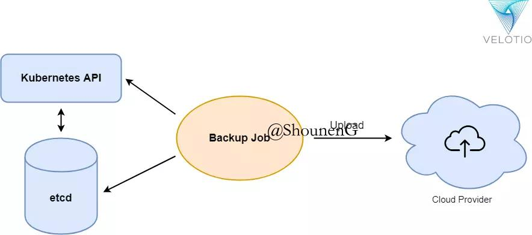

原文 - The Ultimate Guide to Disaster Recovery for Your Kubernetes Clusters
序言
Kubernetes允许我们运行大规模容器化app而不需要过多关注app的负载均衡细节。你可以通过在Kubernetes上运行多个app副本(replicas)(pods)来保证你的app的高可用性。所有容器编排的复杂细节安全地隐藏着，所以你可以专注于开发app而不是专注在如何部署它。你可以在这里了解更多关于Kubernetes集群高可用以及如何通过Kubeadm实现Kubernetes高可用(use Kubedm for high availability in Kubernetes)。
但是使用Kubernetes有它本身的一些挑战以及要让Kubernetes运行起来需要花一些功夫。如果你不熟悉如何运行Kubernetes，你或许可以看看这个。
Kubernetes可以让我们实现零停机的部署，但是必然还是会有可能在任何时候发生服务中断的事件。你的网络可能down掉，你的最新的app镜像可能引起一个严重的bug，或者在最罕见的案例下，你可能面临一个自然灾害。
当你在使用Kubernetes的时候，或早或晚，你需要设置一个备份。为了以防你的集群进入到一个不可回复的状态，你需要一个备份来回复到集群早前的稳定状态。
为什么备份和恢复?
关于你为什么需要为你的Kubernetes集群准备备份和回复机制，有3个理由:
- 为了在灾难后恢复: 比如某人意外地将你的deployment所处的namespace删除了的情况。
- 为了复制环境: 你想要复制你的生产环境到一个临时环境，以便在一个重大升级前做一些测试。
- 迁移Kubernetes集群: 比方说，你想要迁移的你的Kubernetes集群到另一个环境。
需要备份什么?
现在你知道为什么，让我们看看具体备份要做什么。你需要备份2个东西:
- 你的Kubernetes control plane(通常是master节点)是把数据存放在etcd存储中，于是你需要备份etcd所有陈述以便获取所有Kubernetes资源。
- 如果你有”有状态”(stateful)容器(通常在实际使用中是会遇到的)，你还需要备份持久卷(persistent volume)。
如何备份?
有各种工具比如Heptio ark和Kube-backup支持搭建于cloud provider上的Kubernetes集群的备份和回复。但是如果你没有在使用已经被管理(指云供应商提供的)的Kubernetes集群呢？你可能会需要亲自上阵，如果你的Kubernetes运行在裸机上，就像我们一样。
我们运行拥有3个master的Kubernetes集群，并且有3个etcd member同时运行在每个master上。如果我们失去了一个master，我们还可以恢复master，由于依然满足etcd的最低运行数。现在如果在生产环境下我们失去2个master，我们就需要一个机制去恢复集群运作。

想知道如何构建多个master的Kubernetes集群？继续阅读吧！
给etcd做备份:
给etcd备份机制的不同之处取决于你是如何在Kubernetes环境中构建etcd集群的。
在Kubernetes环境中有2种方法来设置etcd集群:
- 内部etcd集群: 这表示你正在Kubernetes集群中运行容器/pod形式的etcd集群，并且管理这些pod的责任在于Kubernetes。
- 外部etcd集群: 大多数情况下Etcd集群以Linux service的形式运行在Kubernetes集群外，并且提供endpoint给Kubernetes集群以便Kubernetes集群来读写。
给内部Etcd集群做备份的策略:
为了给一个内部etcd pod取备份，我们需要使用Kubernetes CronJob机能，这个方法不需要在宿主机(node)上安装任何etcdctl客户端。
以下是定义了Kubernetes CronJob，用来每分钟获取etcd备份:
apiVersion: batch/v1beta1
kind: CronJob
metadata:
name: backup
namespace: kube-system
spec:
# activeDeadlineSeconds: 100
schedule: "*/1 * * * *"
jobTemplate:
spec:
template:
spec:
containers:
- name: backup
# Same image as in /etc/kubernetes/manifests/etcd.yaml
image: k8s.gcr.io/etcd:3.2.24
env:
- name: ETCDCTL_API
value: "3"
command: ["/bin/sh"]
args: ["-c", "etcdctl --endpoints=https://127.0.0.1:2379 --cacert=/etc/kubernetes/pki/etcd/ca.crt --cert=/etc/kubernetes/pki/etcd/healthcheck-client.crt --key=/etc/kubernetes/pki/etcd/healthcheck-client.key snapshot save /backup/etcd-snapshot-$(date +%Y-%m-%d_%H:%M:%S_%Z).db"]
volumeMounts:
- mountPath: /etc/kubernetes/pki/etcd
name: etcd-certs
readOnly: true
- mountPath: /backup
name: backup
restartPolicy: OnFailure
hostNetwork: true
volumes:
- name: etcd-certs
hostPath:
path: /etc/kubernetes/pki/etcd
type: DirectoryOrCreate
- name: backup
hostPath:
path: /data/backup
type: DirectoryOrCreate给外部Etcd集群做备份的策略:
如果你在Linux主机上作为一个service来运行etcd集群，你应该设置一个Linux的定时任务(cron job)来备份你的集群。
运行以下的命令来备份etcd。
ETCDCTL_API=3 etcdctl --endpoints $ENDPOINT snapshot save /path/for/backup/snapshot.db灾难恢复(disaster recovery)
现在，假设Kubernetes集群完全downn掉之后，我们需要通过etcd snapshot恢复Kubernetes集群。
一般来说，我们需要启动etcd集群，然后在master节点兼etcd endpoint的这个(这些)主机上执行kubeadm init。
保证你把备份了的证书放到/etc/kubernetes/pki(kubeadm init创建集群时创建的存放Kubernetes集群用到的证书的默认目录)目录下。
内部etcd集群恢复策略:
docker run --rm \
-v '/data/backup:/backup' \
-v '/var/lib/etcd:/var/lib/etcd' \
--env ETCDCTL_API=3 \
'k8s.gcr.io/etcd:3.2.24' \
/bin/sh -c "etcdctl snapshot restore '/backup/etcd-snapshot-2018-12-09_11:12:05_UTC.db' ; mv /default.etcd/member/ /var/lib/etcd/"
kubeadm init --ignore-preflight-errors=DirAvailable--var-lib-etcd外部etcd集群的恢复策略
通过以下命令恢复3个etcd节点:
ETCDCTL_API=3 etcdctl snapshot restore snapshot-188.db \
--name master-0 \
--initial-cluster master-0=http://10.0.1.188:2380,master-01=http://10.0.1.136:2380,master-2=http://10.0.1.155:2380 \
--initial-cluster-token my-etcd-token \
--initial-advertise-peer-urls http://10.0.1.188:2380
ETCDCTL_API=3 etcdctl snapshot restore snapshot-136.db \
--name master-1 \
--initial-cluster master-0=http://10.0.1.188:2380,master-1=http://10.0.1.136:2380,master-2=http://10.0.1.155:2380 \
--initial-cluster-token my-etcd-token \
--initial-advertise-peer-urls http://10.0.1.136:2380
ETCDCTL_API=3 etcdctl snapshot restore snapshot-155.db \
--name master-2 \
--initial-cluster master-0=http://10.0.1.188:2380,master-1=http://10.0.1.136:2380,master-2=http://10.0.1.155:2380 \
--initial-cluster-token my-etcd-token \
--initial-advertise-peer-urls http://10.0.1.155:2380
The above three commands will give you three restored folders on three nodes named master:
0.etcd, master-1.etcd and master-2.etcd现在，停止所有节点上的etcd服务，用恢复了的文件夹替换为所有节点上etcd的文件夹，再启动etcd服务。现在你可以看到所有节点，但是有可能只能看见master是ready状态，你需要重新使用现存的ca.crt(你应该做一个备份)文件将另外2个节点join进集群。
在master上运行以下命令:
kubeadm token create --print-join-command这会给你kubeadm join命令，添加一个参数--ignore-preflight-errors在另外2个节点上运行此命令，让它们变为ready状态。
结论
其中一个处理master故障的方法是创建多master的Kubernetes集群，但是即便这样也不能让你完全消除Kubernetes etcd备份和恢复的需求，而且你也有可能会意外地销毁HA环境下的数据。